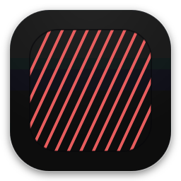

译栈
← 预览索引
译栈
← 预览索引
组件 · 07 · 品牌资产
印记、字标、应用图标与图标精灵。
品牌印记是译栈唯一的视觉花式：深色方块上的珊瑚 115° 斜纹。下方所有 SVG 均从工作区 assets/ 与 build/ 真实加载。
品牌资产 · assets（已加载）
字标assets/logo-lingostack.svg

图标精灵 · build/icons.svg（24×24 · stroke 1.7）
translate
naming
document
favorite
settings
speak
copy
pin
search
retry
book
shield
完整 22 枚图标见 build/icons.svg · 用法 <svg><use href="#i-…"/></svg>，颜色继承父级 currentColor。